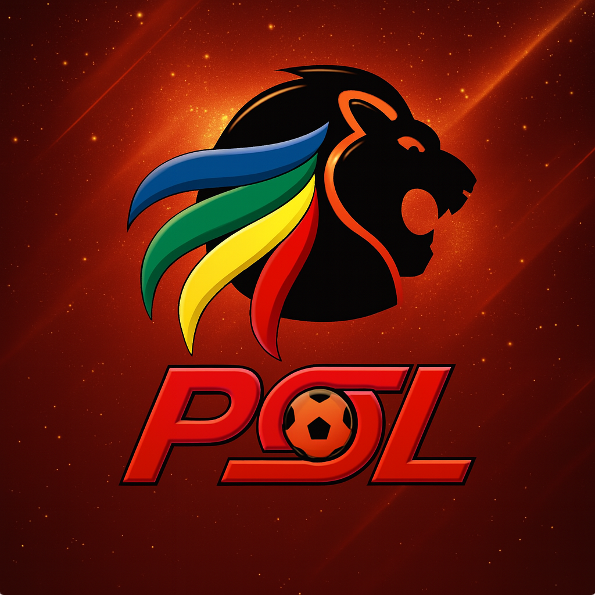

⚽ Soccer League Ranking Table (Java) — A console-based Java application that calculates and
displays the final standings of teams in a soccer league based on match results.
The program reads match outcomes from a text file and applies league rules where a win equals 3
points, a draw equals 1 point, and a loss equals 0 points.
Teams with equal points share the same rank, ordered alphabetically.
This project enhanced my understanding of file input/output, data structures such
as HashMap and ArrayList, as well as sorting and ranking logic using
Collections in Java.